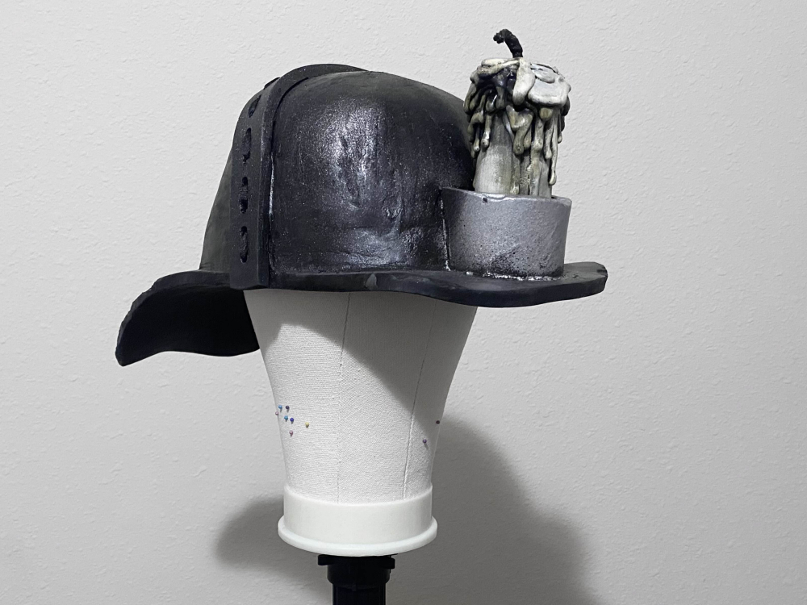
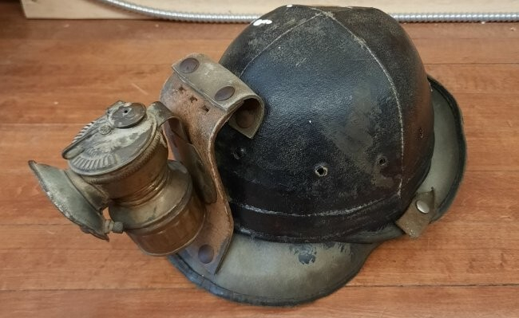
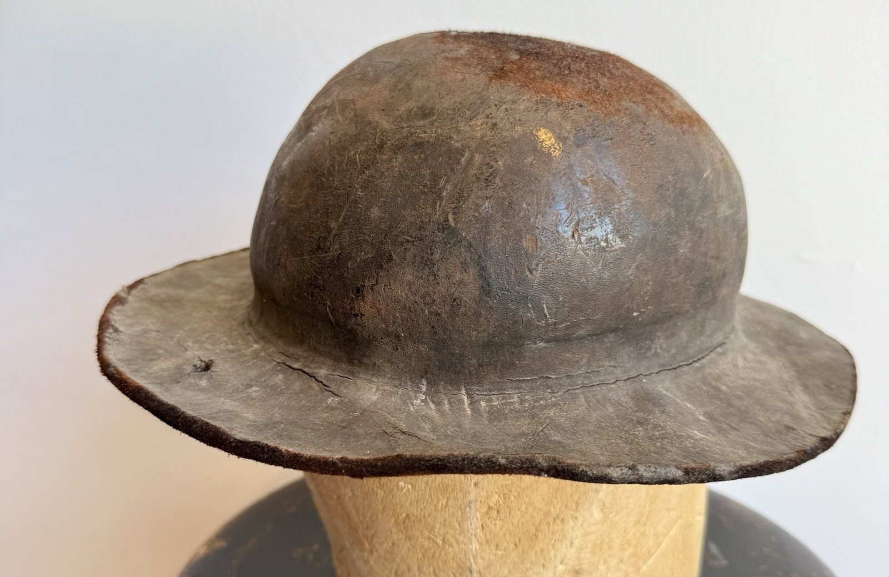

My Norton Campbell Cosplay
Last written: 2025.06.02, Last edited: 2025.11.30
The Technical Stuff
The first thing I created was Norton's helmet, a piece that went through a couple versions before I felt content with the final one.
It's entirely made of eva foam (I also created the pattern for it.) After assembly, the seams are dremeled down and slathered in mod podge.
The one on the right is the helmet I modeled after his ingame ragdoll form, featuring the "staple" seams on the joints of the helmet. It's a little more faithful to the stageplay costume hat than the new one. In promotional art of Norton as well as his stageplay costume, most fans believe his helmet is made of metal. Real life historical documentation would imply his helmet to be a coated canvas or leather instead.
 If you're ever struggling to find historical examples through search engines, just be sure to add "ebay" at the end.
Personally I think it looks metallic because of a reflective zinc and lead dust coat from his work. I realized I prefer my cosplay to be more on the realistic side, so the draft helmet has since been sold off. My last edit to the helmet I settled with is a flat extrusion where the stitching should be, and I drilled several more holes to insert the shoelace into
In his first appearance in Ashes Of Memory Norton's helmet appears on the table of the manor's dining hall with leather stitching rather than weld seams like I initially thought they were. At least it's more comfortable to wear than metal, though I like metal helmet fanon Norton just as fine.
The Scarf
Norton wears a white scarf. Isn't that a pretty bold color to sport in the deeper dirts? It shows up yellow in most renders and artwork from years of wear, and is around the same color as his helmet's candle. I didn't feel like sewing, so I opted to cut out a strip of thick flannel.
All my cosplays needed to be made as comfortable to wear as possible, so it mattered what fabric I'd be wearing for long periods of time without getting irritated. That's why I sometimes do or don't wear a wig for this costume.
I went with flannel since it can keep a stiff structure while being comfortable around your neck, whereas some other cotton constructions aren't, like broadcloths. The edges are brushed with eyeshadow then finished with Got2b Glued Hairspray. The shape it takes on camera is the shape it is permanently in in real life.
The Compass
Though never stated, I think the closest model is a Verner's 1918's Prismatic Marching Compass.

While his compass model is available on the secondhand market, I modeled and printed a functional hinged compass prop based off of it. Not much to say, it's a very toony recreation of the real one. If you want a lightweight compass replica like this for your Norton Campbell costume, you're free to e-mail me to place a commission.